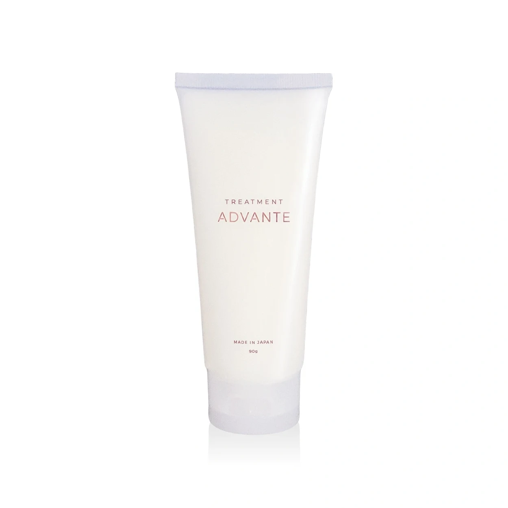
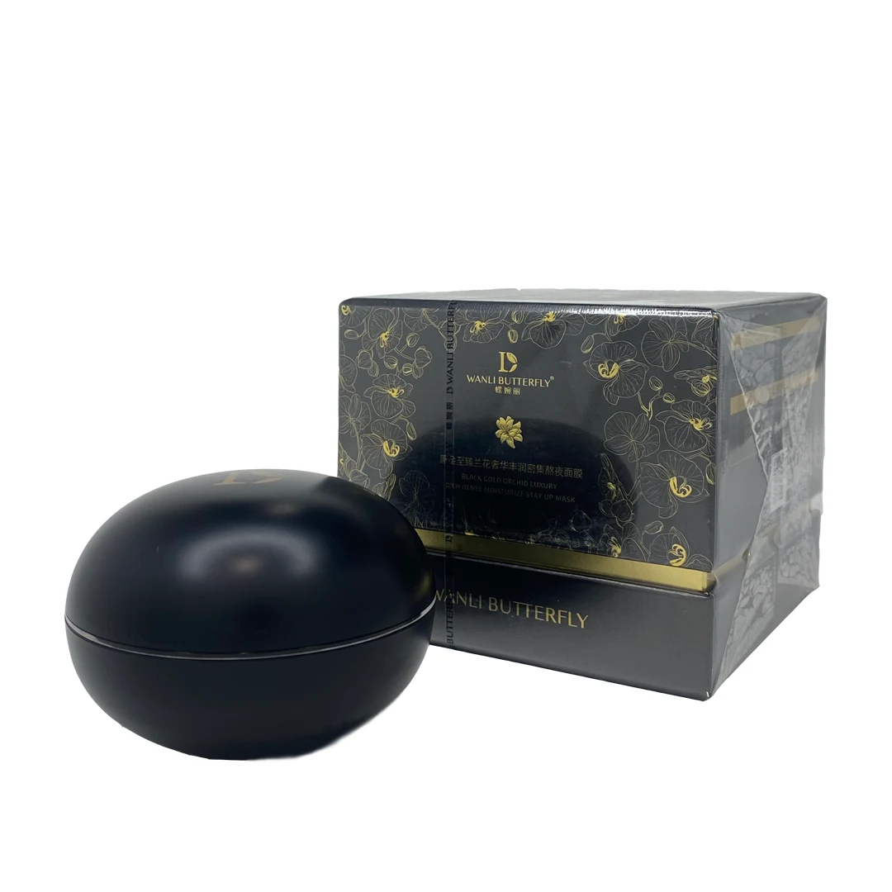

№ 02
№ 02SHUI ZHUAN
Питательная маска для волос
4 000 ₽500 мл
 BEAUTY & REVIVAL
BEAUTY & REVIVAL CAVIAR PURE • 01 / 03
CAVIAR PURE • 01 / 03Шампунь SHUI ZHUAN для очищения волос и кожи головы. В составе — экстракт икры, алоэ вера и масло ши.
Вспеньте на влажных волосах, аккуратно помассируйте кожу головы и тщательно смойте водой.
№ 02
№ 06 № 03
№ 03
№ 04